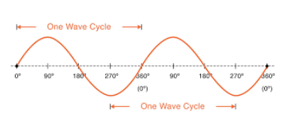
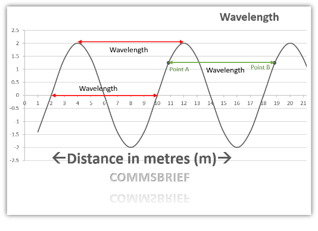
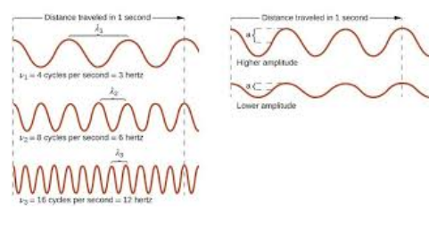

You will learn about radio waves, different atmospheric layers in the air where they travel, and their role in Naval Communications.
Radio waves are energy waves produced by transmitters, a type of comm equipment that sends information out into the air/atmosphere. These waves have both electrical and magnetic properties (hence electromagnetic).
In RF communications, radio waves carry voice information or data that make communications meaningful.
Ex: as you listen to the radio, sounds you hear were carried by electromagnetic waves that were transmitted from the radio station’s antenna, a structure that sends or receives radio waves.
All waves have 5 characteristics:
Think of it like:
Radio waves are constantly in motion, propagation describes the way electromagnetic waves move, from the time they leave the originators comms equipment until they are taken in, they move in predictable and repeating patterns.
Because radio waves move, they can also be described according to their velocity, or how fast they move. All radio waves travel at the same velocity within a given substance, in outer space they travel at the speed of light (186,000 miles per second.) within the atmosphere the wave velocity is a little slower due to air resistance. Moving through water, their speed slows further due to increased resistance.
The cycle of an electromagnetic wave describes one complete occurrence of waves motion, all waves have a similar shape. Looks just like a sine curve. A complete cycle consists of one high point and one low point in the waves motion.

Wavelength is the distance covered by a point on the wave to that same point in the next cycle. (8m in this image)

If the wavelength is short, the radio wave:
Similarly, if the wavelength is long, the radio wave:
We will be covering:
Frequency is the number of cycles a wave completes in one second, and is expressed in hertz. One hertz is equal to one cycle per second.(1MHz = Million Hertz, 1 GHz = Billion Hertz)

As radio waves leave comm equipment and travel into atmosphere, air conditions can affect how waves travel. We have 3 atmospheric layers:
The troposphere extends from the surface of the Earth to height of 6-10 miles. Temperature in troposphere gradually decreases as height increases. All weather conditions take place in this layer, including clouds which affect radio wave propagation. Other factors that affect radio waves are:
The stratosphere is located 10-30 miles above the Earth’s surface, between troposphere and ionosphere. The stratosphere has relatively little effect on radio waves because it has a constant temperature. The make up of this layer has very little weather vapor which contributes to the layer’s stability.
The ionosphere is located about 30-250 miles above the Earth’s surface, above the stratosphere. The ionosphere has three sublayers from lowest to highest:
Characteristics of the ionosphere change due to influences from the:
Increased energy waves from the sun, ultraviolet radiation entering the ionosphere splits some of the gas atoms contained in the air molecules into electrically charged particles called ions (process is called ionization). When too many ions form they affect RF communications, as radio waves with higher energy should be used.
Decreased energy waves from the sun – frequency can be lower due to less ionizations.